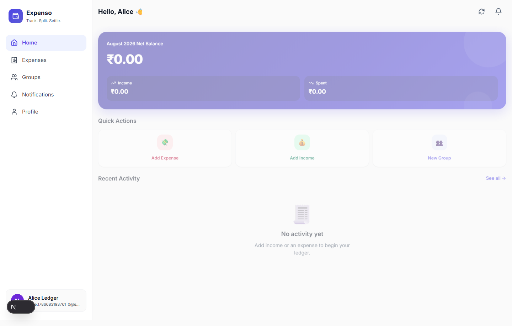
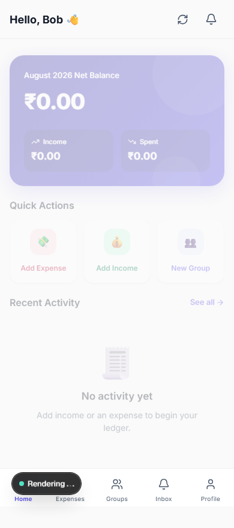
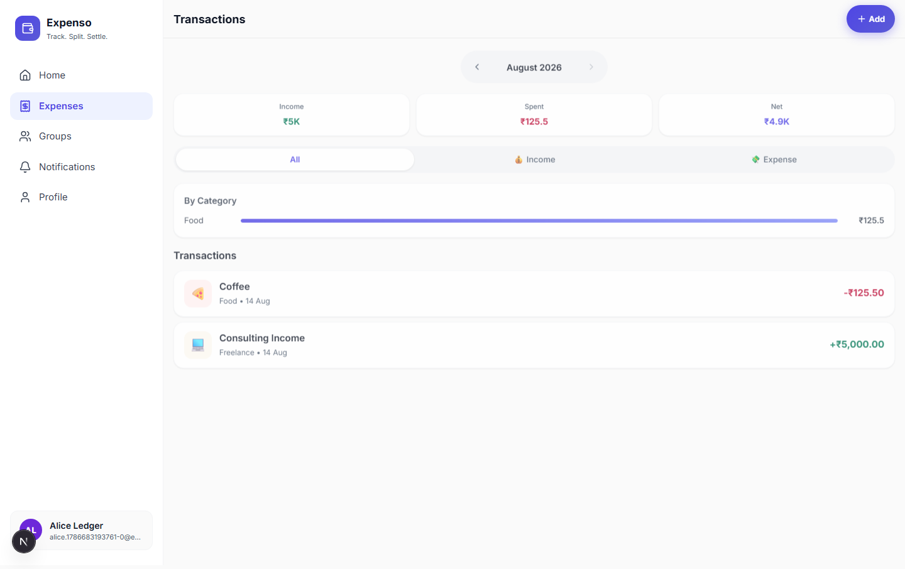
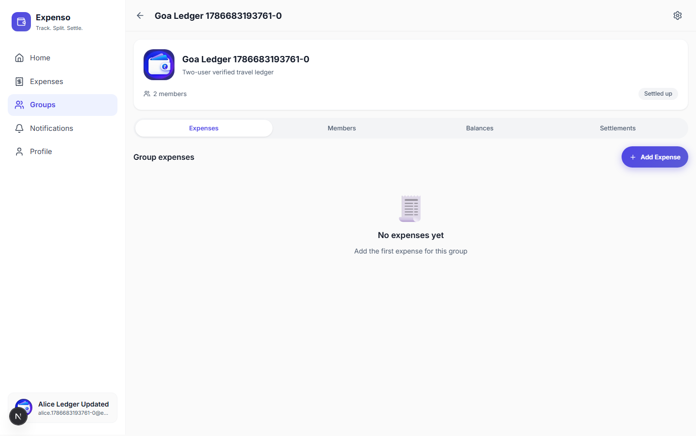
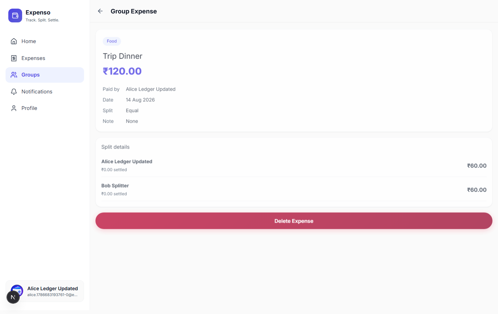
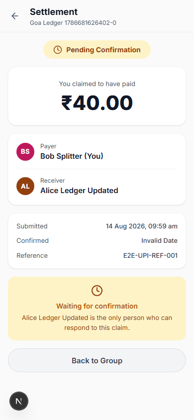
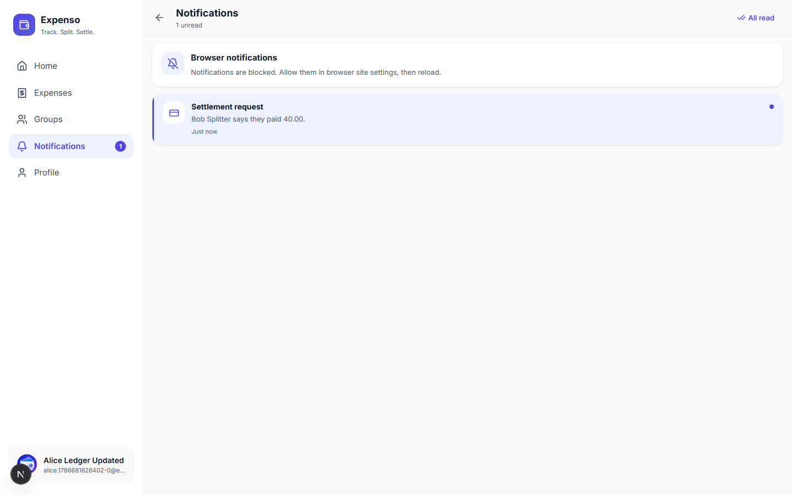
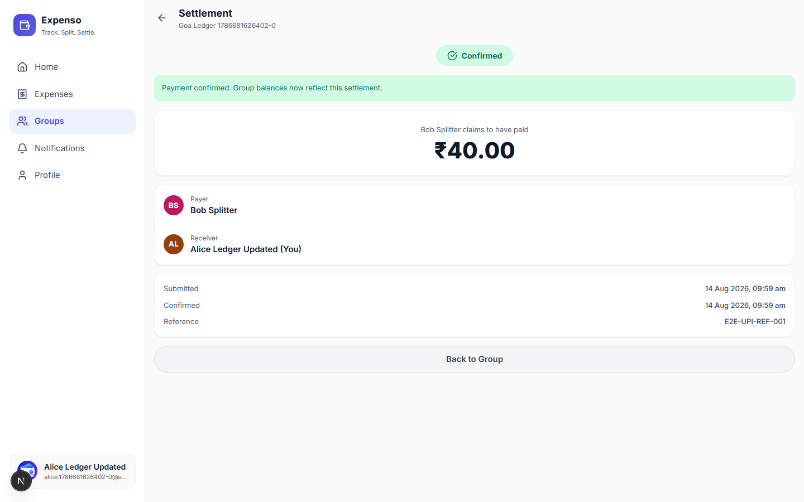
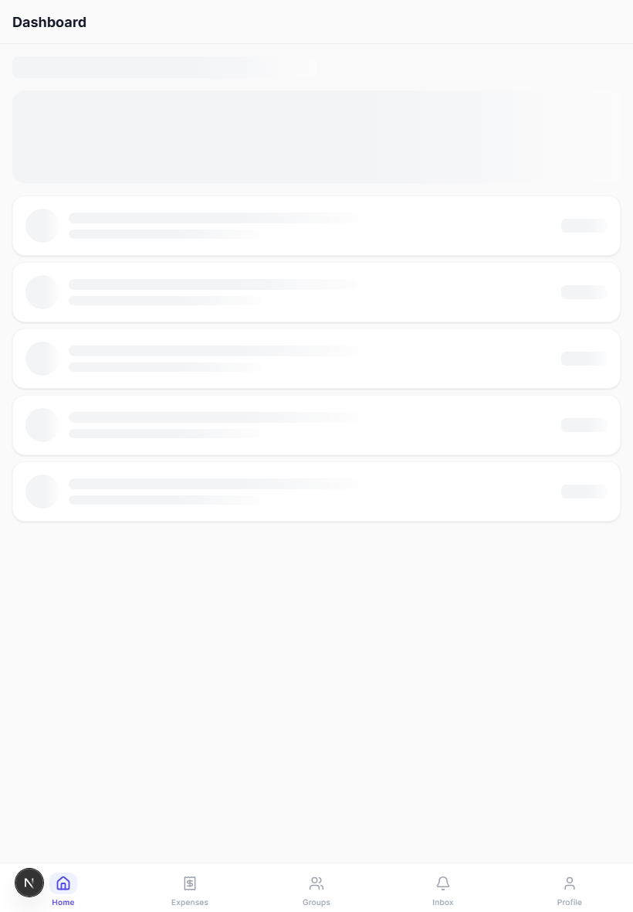
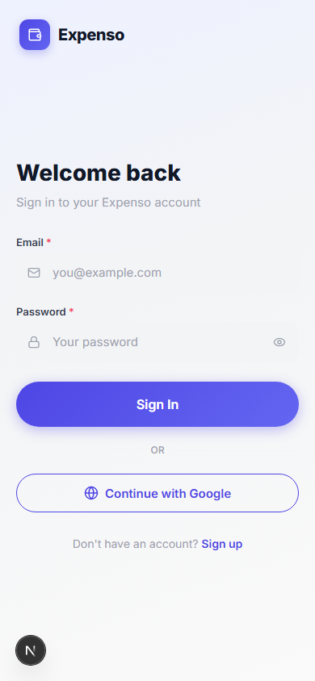

177
Vitest unit, contract, route, and security tests
Issue #7 · Release evidence
Frontend now uses production-shaped Node.js APIs and Supabase-backed data. Two real browser identities completed the full expense-sharing and settlement journey on an isolated local Supabase instance.
Automated proof
Fresh database and production build.
| Gate | Result | Evidence |
|---|---|---|
| Two-user browser journey | Passed | Chromium — complete finance, group, settlement, privacy, keyboard, refresh, and back/forward flow |
| Cross-browser responsive smoke | Passed | Firefox, 10.4 s — authentication, dashboard, mobile navigation, inbox |
| Production compilation | Passed | Next.js 16.3 generated every page and API route |
| Type and code quality | Passed | TypeScript and ESLint: zero errors |
| Python migration contracts | Passed | 18 checks passed; 2 retired Android-only checks skipped |
| Database schema lint | Passed | Public and private schemas: no errors |
| Dependency security | Passed | npm audit: 0 vulnerabilities |
Real data journey
Screen recordings
Recorded by Playwright during successful runs.
Personal finance, group creation, shared expense, notification, confirmation. Open recording
Mobile navigation, payer settlement, waiting state, confirmed result. Open recording
Cross-browser login, dashboard, navigation, inbox. Open recording
Screenshots











Environment boundary
Fresh isolated Supabase instance running repository’s complete migration chain; real local Auth, Postgres, RLS, Storage, browser cookies, Node.js APIs, and service worker. No runtime mock data.
Hosted project rspuqbcgjqezimwwpbzl was not mutated because this environment has no owner access token. Apply reviewed migrations and required secrets through CI or Supabase Dashboard before production traffic.
{kind=link}
{kind=link}
{kind=link}
{kind=link}
{kind=link}
{kind=link}
{kind=link}
{kind=link}
{kind=link}
{kind=link}